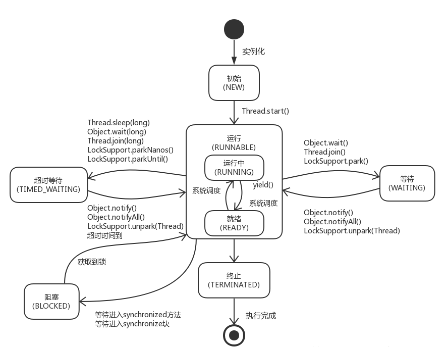
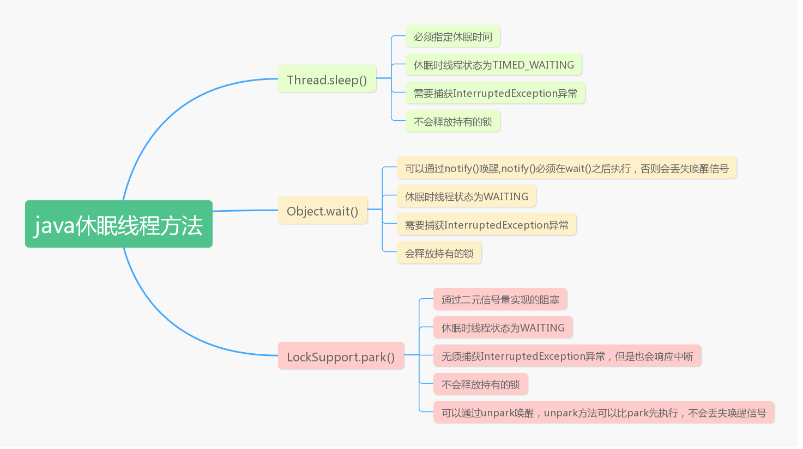

<!DOCTYPE html>
<html>
<head><meta name="generator" content="Hexo 3.8.0">
  <meta charset="utf-8">
  
  <title>高并发系列之线程 | 孔华日的博客</title>
  <meta name="viewport" content="width=device-width, initial-scale=1, maximum-scale=1">
  
    <meta name="keywords" content="孔华日的博客">
  
  <meta name="description" content="Java多线程之线程状态最近在看Reentrantlock底层原理的时候，了解到AQS下线程堵塞使用的是LockSupport.park()，发现这一块之前没有怎么看过，所以学习加深一下。 进去正题   -首先Thread中有几种状态，看了一下源码 123456789101112131415161718192021222324252627282930313233343536373839404142">
<meta name="keywords" content="JAVA高并发">
<meta property="og:type" content="article">
<meta property="og:title" content="高并发系列之线程">
<meta property="og:url" content="https://www.konghr.cn/post/dgf5oofy.html">
<meta property="og:site_name" content="孔华日的博客">
<meta property="og:description" content="Java多线程之线程状态最近在看Reentrantlock底层原理的时候，了解到AQS下线程堵塞使用的是LockSupport.park()，发现这一块之前没有怎么看过，所以学习加深一下。 进去正题   -首先Thread中有几种状态，看了一下源码 123456789101112131415161718192021222324252627282930313233343536373839404142">
<meta property="og:locale" content="zh-CN">
<meta property="og:image" content="https://www.konghr.cn/images/20180814203656288.png">
<meta property="og:image" content="https://www.konghr.cn/images/5bff9535e4b04dd2799a6ae8.png">
<meta property="og:updated_time" content="2020-02-28T09:48:05.610Z">
<meta name="twitter:card" content="summary">
<meta name="twitter:title" content="高并发系列之线程">
<meta name="twitter:description" content="Java多线程之线程状态最近在看Reentrantlock底层原理的时候，了解到AQS下线程堵塞使用的是LockSupport.park()，发现这一块之前没有怎么看过，所以学习加深一下。 进去正题   -首先Thread中有几种状态，看了一下源码 123456789101112131415161718192021222324252627282930313233343536373839404142">
<meta name="twitter:image" content="https://www.konghr.cn/images/20180814203656288.png">
  
  
    <link rel="icon" href="/favicon.ico">
  
  <link href="//cdn.bootcss.com/font-awesome/4.7.0/css/font-awesome.min.css" rel="stylesheet" type="text/css">
  <link rel="stylesheet" href="/css/style.css">
  <script src="/js/pace.min.js"></script>
  

  
  

</head>
</html>
<body>
  <div id="container">
      <header id="header">
    <div id="banner"></div>
    <div id="header-outer">
        <div id="header-menu" class="header-menu-pos animated">
            <div class="header-menu-container">
                <a href="/" class="left">
                    <span class="site-title">孔华日的博客</span>
                </a>
                <nav id="header-menu-nav" class="right">
                    
                    <a href="/">
                        <i class="fa fa-home"></i>
                        <span>首页</span>
                    </a>
                    
                    <a href="/archives">
                        <i class="fa fa-archive"></i>
                        <span>技术随笔</span>
                    </a>
                    
                    <a href="/categories">
                        <i class="fa fa-book"></i>
                        <span>学习目录</span>
                    </a>
                    
                    <a href="/about">
                        <i class="fa fa-user"></i>
                        <span>关于</span>
                    </a>
                    
                </nav>
                <a class="mobile-header-menu-button">
                    <i class="fa fa-bars"></i>
                </a>
            </div>
        </div>
        <div id="header-row">
            <div id="logo">
                <a href="/">
                    
                </a>
            </div>
            <div class="header-info">
                <div id="header-title">
                    
                    <h2>
                        孔华日的博客
                    </h2>
                    
                </div>
                <div id="header-description">
                    
                    <h3>
                        一个专注 WEB 开发的技术博客
                    </h3>
                    
                </div>
            </div>
            <nav class="header-nav">
                <div class="social">
                    
                        <a title="konghuari" target="_blank" href="//konghr.cn">
                            <i class="fa fa-home fa-2x"></i></a>
                    
                        <a title="github" target="_blank" href="//github.com/konghuari">
                            <i class="fa fa-github fa-2x"></i></a>
                    
                        <a title="weibo" target="_blank" href="//weibo.com/konghuari">
                            <i class="fa fa-weibo fa-2x"></i></a>
                    
                        <a title="twitter" target="_blank" href="//twitter.com/konghuari">
                            <i class="fa fa-twitter fa-2x"></i></a>
                    
                </div>
            </nav>
        </div>
    </div>
</header>
      <div class="outer">
        <section id="main" class="body-wrap"><article id="post-高并发之线程" class="article article-type-post" itemscope itemprop="blogPost">
  <div class="article-inner">
    
      <header class="article-header">
        
  
    <h1 class="post-title" itemprop="name">
      高并发系列之线程
    </h1>
    <div class="post-title-bar">
      <ul>
          
              <li>
                  <i class="fa fa-book"></i>
                  
                      <a href="/categories/÷JAVA高并发/">÷JAVA高并发</a>
                  
              </li>
          
        <li>
          <i class="fa fa-calendar"></i>  2020-02-27
        </li>
        <li>
          <i class="fa fa-eye"></i>
          <span id="busuanzi_value_page_pv"></span>
        </li>
      </ul>
    </div>
  

          
      </header>
    
    <div class="article-entry post-content" itemprop="articleBody">
      
            
            <h2 id="Java多线程之线程状态"><a href="#Java多线程之线程状态" class="headerlink" title="Java多线程之线程状态"></a>Java多线程之线程状态</h2><p>最近在看Reentrantlock底层原理的时候，了解到AQS下线程堵塞使用的是LockSupport.park()，发现这一块之前没有怎么看过，所以学习加深一下。</p>
<p>进去正题</p>
<hr>
<p> -首先Thread中有几种状态，看了一下源码<br> <figure class="highlight plain"><table><tr><td class="gutter"><pre><span class="line">1</span><br><span class="line">2</span><br><span class="line">3</span><br><span class="line">4</span><br><span class="line">5</span><br><span class="line">6</span><br><span class="line">7</span><br><span class="line">8</span><br><span class="line">9</span><br><span class="line">10</span><br><span class="line">11</span><br><span class="line">12</span><br><span class="line">13</span><br><span class="line">14</span><br><span class="line">15</span><br><span class="line">16</span><br><span class="line">17</span><br><span class="line">18</span><br><span class="line">19</span><br><span class="line">20</span><br><span class="line">21</span><br><span class="line">22</span><br><span class="line">23</span><br><span class="line">24</span><br><span class="line">25</span><br><span class="line">26</span><br><span class="line">27</span><br><span class="line">28</span><br><span class="line">29</span><br><span class="line">30</span><br><span class="line">31</span><br><span class="line">32</span><br><span class="line">33</span><br><span class="line">34</span><br><span class="line">35</span><br><span class="line">36</span><br><span class="line">37</span><br><span class="line">38</span><br><span class="line">39</span><br><span class="line">40</span><br><span class="line">41</span><br><span class="line">42</span><br><span class="line">43</span><br><span class="line">44</span><br><span class="line">45</span><br><span class="line">46</span><br><span class="line">47</span><br><span class="line">48</span><br><span class="line">49</span><br><span class="line">50</span><br><span class="line">51</span><br><span class="line">52</span><br><span class="line">53</span><br><span class="line">54</span><br><span class="line">55</span><br><span class="line">56</span><br><span class="line">57</span><br><span class="line">58</span><br><span class="line">59</span><br><span class="line">60</span><br><span class="line">61</span><br><span class="line">62</span><br><span class="line">63</span><br><span class="line">64</span><br></pre></td><td class="code"><pre><span class="line">public enum State &#123;</span><br><span class="line">    /**</span><br><span class="line">     * Thread state for a thread which has not yet started.</span><br><span class="line">     */</span><br><span class="line">    NEW,</span><br><span class="line"></span><br><span class="line">    /**</span><br><span class="line">     * Thread state for a runnable thread.  A thread in the runnable</span><br><span class="line">     * state is executing in the Java virtual machine but it may</span><br><span class="line">     * be waiting for other resources from the operating system</span><br><span class="line">     * such as processor.</span><br><span class="line">     */</span><br><span class="line">    RUNNABLE,</span><br><span class="line"></span><br><span class="line">    /**</span><br><span class="line">     * Thread state for a thread blocked waiting for a monitor lock.</span><br><span class="line">     * A thread in the blocked state is waiting for a monitor lock</span><br><span class="line">     * to enter a synchronized block/method or</span><br><span class="line">     * reenter a synchronized block/method after calling</span><br><span class="line">     * &#123;@link Object#wait() Object.wait&#125;.</span><br><span class="line">     */</span><br><span class="line">    BLOCKED,</span><br><span class="line"></span><br><span class="line">    /**</span><br><span class="line">     * Thread state for a waiting thread.</span><br><span class="line">     * A thread is in the waiting state due to calling one of the</span><br><span class="line">     * following methods:</span><br><span class="line">     * &lt;ul&gt;</span><br><span class="line">     *   &lt;li&gt;&#123;@link Object#wait() Object.wait&#125; with no timeout&lt;/li&gt;</span><br><span class="line">     *   &lt;li&gt;&#123;@link #join() Thread.join&#125; with no timeout&lt;/li&gt;</span><br><span class="line">     *   &lt;li&gt;&#123;@link LockSupport#park() LockSupport.park&#125;&lt;/li&gt;</span><br><span class="line">     * &lt;/ul&gt;</span><br><span class="line">     *</span><br><span class="line">     * &lt;p&gt;A thread in the waiting state is waiting for another thread to</span><br><span class="line">     * perform a particular action.</span><br><span class="line">     *</span><br><span class="line">     * For example, a thread that has called &lt;tt&gt;Object.wait()&lt;/tt&gt;</span><br><span class="line">     * on an object is waiting for another thread to call</span><br><span class="line">     * &lt;tt&gt;Object.notify()&lt;/tt&gt; or &lt;tt&gt;Object.notifyAll()&lt;/tt&gt; on</span><br><span class="line">     * that object. A thread that has called &lt;tt&gt;Thread.join()&lt;/tt&gt;</span><br><span class="line">     * is waiting for a specified thread to terminate.</span><br><span class="line">     */</span><br><span class="line">    WAITING,</span><br><span class="line"></span><br><span class="line">    /**</span><br><span class="line">     * Thread state for a waiting thread with a specified waiting time.</span><br><span class="line">     * A thread is in the timed waiting state due to calling one of</span><br><span class="line">     * the following methods with a specified positive waiting time:</span><br><span class="line">     * &lt;ul&gt;</span><br><span class="line">     *   &lt;li&gt;&#123;@link #sleep Thread.sleep&#125;&lt;/li&gt;</span><br><span class="line">     *   &lt;li&gt;&#123;@link Object#wait(long) Object.wait&#125; with timeout&lt;/li&gt;</span><br><span class="line">     *   &lt;li&gt;&#123;@link #join(long) Thread.join&#125; with timeout&lt;/li&gt;</span><br><span class="line">     *   &lt;li&gt;&#123;@link LockSupport#parkNanos LockSupport.parkNanos&#125;&lt;/li&gt;</span><br><span class="line">     *   &lt;li&gt;&#123;@link LockSupport#parkUntil LockSupport.parkUntil&#125;&lt;/li&gt;</span><br><span class="line">     * &lt;/ul&gt;</span><br><span class="line">     */</span><br><span class="line">    TIMED_WAITING,</span><br><span class="line"></span><br><span class="line">    /**</span><br><span class="line">     * Thread state for a terminated thread.</span><br><span class="line">     * The thread has completed execution.</span><br><span class="line">     */</span><br><span class="line">    TERMINATED;</span><br><span class="line">&#125;</span><br></pre></td></tr></table></figure></p>
<p>6个状态定义: java.lang.Thread.State</p>
<p>　　New: 尚未启动的线程的线程状态。</p>
<p>　　Runnable: 可运行线程的线程状态，等待CPU调度。</p>
<p>　　Blocked: 线程阻塞等待监视器锁定的线程状态。处于synchronized同步代码块或方法中被阻塞。</p>
<p>　　Waiting: 等待线程的线程状态。下 列不带超时的方式:</p>
<p>　　Object.wait、Thread.join、 LockSupport.park</p>
<p>　　Timed Waiting:具有指定等待时间的等待线程的线程状态。</p>
<p>下 列带超时的方式:</p>
<p>　　Thread.sleep、0bject.wait、 Thread.join、 LockSupport.parkNanos、 LockSupport.parkUntil</p>
<p>　　Terminated: 终止线程的线程状态。线程正常完成执行或者出现异常。</p>
<p>上面的流程基本上大家都熟悉，那这些状态的锁的状态是什么样的？<br>先抛一下理论再讲原理。首先讲一下Thread.sleep、Object.wait、LockSupport.park 区别<br>java中有三种方法可以让线程计入休眠状态，分别是Thread.sleep()、Object.wait()、LockSupport.park()方法。</p>
<p>##Thread.sleep()方法<br>Thread.sleep(time)方法必须传入指定的时间，线程将进入休眠状态，通过jstack输出线程快照的话此时该线程的状态应该是TIMED_WAITING，表示休眠一段时间。<br>另外，该方法会抛出InterruptedException异常，这是受检查异常，调用者必须处理。<br>通过sleep方法进入休眠的线程不会释放持有的锁，因此，在持有锁的时候调用该方法需要谨慎。</p>
<p>##Object.wait() 方法<br>java的每个对象都隐式的继承了Object类。因此每个类都有自己的wait()方法。我们通过object.wait()方法也可以让线程进入休眠。wait()最后是调用了下面方法:<br><figure class="highlight plain"><table><tr><td class="gutter"><pre><span class="line">1</span><br></pre></td><td class="code"><pre><span class="line">public final native void wait(long timeout) throws InterruptedException;</span><br></pre></td></tr></table></figure></p>
<p>如果不传timeout，wait将会进入无限制的休眠当中，直到有人唤醒他。使用wait()让线程进入休眠的话，无论有没有传入timeout参数，线程的状态都将是WAITING状态。<br>此外，必须获得对象上的锁后，才可以执行该对象的wait方法。否则程序会在运行时抛出IllegalMonitorStateException异常。<br>再调用wait()方法后，线程进入休眠的同时，会释放持有的该对象的锁，这样其他线程就能在这期间获取到锁了。调用Object对象的notify()或者notifyAll()方法可以唤醒因为wait()而进入等待的线程。</p>
<p>##LockSupport.park() 方法<br>通过LockSupport.park()方法，我们也可以让线程进入休眠。它的底层也是调用了Unsafe类的park方法：<br><figure class="highlight plain"><table><tr><td class="gutter"><pre><span class="line">1</span><br><span class="line">2</span><br><span class="line">3</span><br><span class="line">4</span><br><span class="line">5</span><br></pre></td><td class="code"><pre><span class="line">//Unsafe.java类</span><br><span class="line">//唤醒指定的线程</span><br><span class="line">public native void unpark(Thread jthread);</span><br><span class="line">//isAbsolute表示后面的时间是绝对时间还是相对时间，time表示时间，time=0表示无限阻塞下去</span><br><span class="line">public native void park(boolean isAbsolute, long time);</span><br></pre></td></tr></table></figure></p>
<p>调用park方法时，还允许设置一个blocker对象，主要用来给监视工具和诊断工具确定线程受阻塞的原因。<br>调用park方法进入休眠后，线程状态为WAITING。</p>
<p>##实现原理<br>LockSupport.park() 的实现原理是通过二元信号量做的阻塞，这个信号量最多只能加到1。我们也可以理解成获取释放许可证的方法。然后unpark()方法会释放一个许可证，park()方法则是获取许可证，如果当前没有许可证，则进入休眠状态直到许可证被释放了才被唤醒。无论执行多少次unpark()方法，也最多只会有一个许可证。</p>
<p>和wait的不同<br>park、unpark方法和wait、notify()方法有一些相似的地方。都是休眠，然后唤醒。但是wait、notify方法有一个不好的地方，就是我们在编程的时候必须能保证wait方法比notify方法先执行。如果notify方法比wait方法晚执行的话，就会导致因wait方法进入休眠的线程接收不到唤醒通知的问题。而park、unpark则不会有这个问题，我们可以先调用unpark方法释放一个许可证，这样后面线程调用park方法时，发现已经许可证了，就可以直接获取许可证而不用进入休眠状态了。</p>
<p>另外，和wait方法不同，执行park进入休眠后并不会释放持有的锁，wait会释放锁。</p>
<p>###【Object.wait()和LockSupport.park()的区别】</p>
<blockquote>
<ul>
<li><ol>
<li>Object.wait()方法需要在synchronized块中执行；</li>
</ol>
</li>
<li><ol start="2">
<li>LockSupport.park()可以在任意地方执行；</li>
</ol>
</li>
<li><ol start="3">
<li>Object.wait()不带超时的，需要另一个线程执行notify()来唤醒，但不一定继续执行后续内容；</li>
</ol>
</li>
<li><ol start="4">
<li>LockSupport.park()不带超时的，需要另一个线程执行unpark()来唤醒，一定会继续执行后续内容；</li>
</ol>
</li>
<li><ol start="5">
<li>如果在wait()之前执行了notify()会抛出IllegalMonitorStateException异常；</li>
</ol>
</li>
<li><ol start="6">
<li>如果在park()之前执行了unpark()会线程不会被阻塞，直接跳过park()，继续执行后续内容；</li>
</ol>
</li>
</ul>
</blockquote>
<p>###【Thread.sleep()和LockSupport.park()的区别】</p>
<blockquote>
<ul>
<li><ol>
<li>Thread.sleep()和LockSupport.park()方法类似，都是阻塞当前线程的执行且都不会释放锁。</li>
</ol>
</li>
<li><ol start="2">
<li>Thread.sleep()没法从外部唤醒，只能自己醒过来；</li>
</ol>
</li>
<li><ol start="3">
<li>LockSupport.park()方法可以被另一个线程调用LockSupport.unpark()方法唤醒；</li>
</ol>
</li>
</ul>
</blockquote>
<p> ##总结一下</p>
<p></p>

            <div class="post-copyright">
    <div class="content">
        <p>最后更新： 2020年02月28日 17:48</p>
        <p>原始链接： <a class="post-url" href="/post/dgf5oofy.html" title="高并发系列之线程">https://www.konghr.cn/post/dgf5oofy.html</a></p>
        <footer>
            <a href="https://www.konghr.cn">
                
                khr
            </a>
        </footer>
    </div>
</div>

      
        
            
<div class="page-reward">
    <a id="rewardBtn" href="javascript:;">赏</a>
</div>

<div id="reward" class="post-modal reward-lay">
    <a class="close" href="javascript:;" id="reward-close">×</a>
    <span class="reward-title">
        <i class="icon icon-quote-left"></i>
        请我吃糖~
        <i class="icon icon-quote-right"></i>
    </span>
    <div class="reward-content">
        
        <div class="reward-code">
            
        </div>
        <div class="reward-select">
            
            <label class="reward-select-item checked" data-id="wechat" data-wechat="/images/wechat_code.png">
                
            </label>
            
            
            <label class="reward-select-item" data-id="alipay" data-alipay="/images/alipay_code.png">
                
            </label>
            
        </div>
    </div>
</div>


        
    </div>
    <footer class="article-footer">
        
        
<div class="post-share">
    <a href="javascript:;" id="share-sub" class="post-share-fab">
        <i class="fa fa-share-alt"></i>
    </a>
    <div class="post-share-list" id="share-list">
        <ul class="share-icons">
          <li>
            <a class="weibo share-sns" target="_blank" href="http://service.weibo.com/share/share.php?url=https://www.konghr.cn/post/dgf5oofy.html&title=《高并发系列之线程》 — 孔华日的博客&pic=images/39-160F2100R4.png" data-title="微博">
              <i class="fa fa-weibo"></i>
            </a>
          </li>
          <li>
            <a class="weixin share-sns" id="wxFab" href="javascript:;" data-title="微信">
              <i class="fa fa-weixin"></i>
            </a>
          </li>
          <li>
            <a class="qq share-sns" target="_blank" href="http://connect.qq.com/widget/shareqq/index.html?url=https://www.konghr.cn/post/dgf5oofy.html&title=《高并发系列之线程》 — 孔华日的博客&source=" data-title="QQ">
              <i class="fa fa-qq"></i>
            </a>
          </li>
          <li>
            <a class="facebook share-sns" target="_blank" href="https://www.facebook.com/sharer/sharer.php?u=https://www.konghr.cn/post/dgf5oofy.html" data-title="Facebook">
              <i class="fa fa-facebook"></i>
            </a>
          </li>
          <li>
            <a class="twitter share-sns" target="_blank" href="https://twitter.com/intent/tweet?text=《高并发系列之线程》 — 孔华日的博客&url=https://www.konghr.cn/post/dgf5oofy.html&via=https://www.konghr.cn" data-title="Twitter">
              <i class="fa fa-twitter"></i>
            </a>
          </li>
          <li>
            <a class="google share-sns" target="_blank" href="https://plus.google.com/share?url=https://www.konghr.cn/post/dgf5oofy.html" data-title="Google+">
              <i class="fa fa-google-plus"></i>
            </a>
          </li>
        </ul>
     </div>
</div>
<div class="post-modal wx-share" id="wxShare">
    <a class="close" href="javascript:;" id="wxShare-close">×</a>
    <p>扫一扫，分享到微信</p>
    
</div>

<div class="mask"></div>

        
        <ul class="article-footer-menu">
            
            
  <li class="article-footer-tags">
    <i class="fa fa-tags"></i>
      
    <a href="/tags/JAVA高并发/" class="color3">JAVA高并发</a>
      
  </li>

        </ul>
        
    </footer>
  </div>
</article>


    <aside class="post-toc-pos post-toc-top" id="post-toc">
        <nav class="post-toc-wrap">
            <ol class="post-toc"><li class="post-toc-item post-toc-level-2"><a class="post-toc-link" href="#Java多线程之线程状态"><span class="post-toc-text">Java多线程之线程状态</span></a></li></ol>
        </nav>
    </aside>
    

<nav id="article-nav">
  
  
    <a href="/post/4a17d151.html" id="article-nav-older" class="article-nav-link-wrap">
      <span class="article-nav-title">如何管理技术团队</span>
      <i class="fa fa-hand-o-right" aria-hidden="true"></i>
    </a>
  
</nav>


    
        <div id="SOHUCS" sid="高并发之线程"></div>
<script type="text/javascript">
    (function(){
        var appid = 'cyubuOrd7';
        var conf = 'prod_2bfaee69a443e78781a25f53c2f6a1ce';
        var width = window.innerWidth || document.documentElement.clientWidth;
        if (width < 960) {
            window.document.write('<script id="changyan_mobile_js" charset="utf-8" type="text/javascript" src="https://changyan.sohu.com/upload/mobile/wap-js/changyan_mobile.js?client_id=' + appid + '&conf=' + conf + '"><\/script>'); } else { var loadJs=function(d,a){var c=document.getElementsByTagName("head")[0]||document.head||document.documentElement;var b=document.createElement("script");b.setAttribute("type","text/javascript");b.setAttribute("charset","UTF-8");b.setAttribute("src",d);if(typeof a==="function"){if(window.attachEvent){b.onreadystatechange=function(){var e=b.readyState;if(e==="loaded"||e==="complete"){b.onreadystatechange=null;a()}}}else{b.onload=a}}c.appendChild(b)};loadJs("https://changyan.sohu.com/upload/changyan.js",function(){window.changyan.api.config({appid:appid,conf:conf})}); } })(); </script>
    
</section>
        
      </div>
      <footer id="footer">
  <div class="outer">
    <div id="footer-info" class="inner">
      
<p>
    <span id="busuanzi_container_site_uv" style="display:none">
        总访客数：<span id="busuanzi_value_site_uv"></span>
    </span>
    <span id="busuanzi_container_site_pv" style="display:none">
        总访问量：<span id="busuanzi_value_site_pv"></span>
    </span>
</p>


      <p>
        Powered by  <a href="http://hexo.io/" target="_blank">Hexo</a>
        Theme <a href="//github.com/wongminho/hexo-theme-miho" target="_blank">MiHo</a>
      &copy; 2020 khr<br>
      </p>
    </div>
  </div>
</footer>
    <script async src="//busuanzi.ibruce.info/busuanzi/2.3/busuanzi.pure.mini.js"></script>
<script src="//cdn.bootcss.com/jquery/3.2.1/jquery.min.js"></script>
<script>
  var mihoConfig = {
      root: "https://www.konghr.cn",
      animate: true,
      isHome: false,
      share: true,
      reward: 1
  }
</script>
<div class="sidebar">
    <div id="sidebar-search" title="Search">
        <i class="fa fa-search"></i>
    </div>
    <div id="sidebar-category" title="Categories">
        <i class="fa fa-book"></i>
    </div>
    <div id="sidebar-tag" title="Tags">
        <i class="fa fa-tags"></i>
    </div>
    <div id="sidebar-top">
        <span class="sidebar-top-icon"><i class="fa fa-angle-up"></i></span>
    </div>
</div>
<div class="sidebar-menu-box" id="sidebar-menu-box">
    <div class="sidebar-menu-box-container">
        <div id="sidebar-menu-box-categories">
            <a class="category-link" href="/categories/÷JAVA高并发/">÷JAVA高并发</a><a class="category-link" href="/categories/÷管理技术团队/">÷管理技术团队</a><a class="category-link" href="/categories/面试中介绍自己的/">面试中介绍自己的</a>
        </div>
        <div id="sidebar-menu-box-tags">
            <a href="/tags/JAVA高并发/" style="font-size: 10px;">JAVA高并发</a> <a href="/tags/管理技术团队/" style="font-size: 10px;">管理技术团队</a> <a href="/tags/面试中介绍自己的/" style="font-size: 10px;">面试中介绍自己的</a>
        </div>
    </div>
    <a href="javascript:;" class="sidebar-menu-box-close">&times;</a>
</div>
<div class="mobile-header-menu-nav" id="mobile-header-menu-nav">
    <div class="mobile-header-menu-container">
        <span class="title">Menus</span>
        <ul class="mobile-header-menu-navbar">
            
            <li>
                <a href="/">
                    <i class="fa fa-home"></i><span>首页</span>
                </a>
            </li>
            
            <li>
                <a href="/archives">
                    <i class="fa fa-archive"></i><span>技术随笔</span>
                </a>
            </li>
            
            <li>
                <a href="/categories">
                    <i class="fa fa-book"></i><span>学习目录</span>
                </a>
            </li>
            
            <li>
                <a href="/about">
                    <i class="fa fa-user"></i><span>关于</span>
                </a>
            </li>
            
        </ul>
    </div>
    <div class="mobile-header-tag-container">
        <span class="title">Tags</span>
        <div id="mobile-header-container-tags">
            <a href="/tags/JAVA高并发/" style="font-size: 10px;">JAVA高并发</a> <a href="/tags/管理技术团队/" style="font-size: 10px;">管理技术团队</a> <a href="/tags/面试中介绍自己的/" style="font-size: 10px;">面试中介绍自己的</a>
        </div>
    </div>
</div>
<div class="search-wrap">
    <span class="search-close">&times;</span>
        <a href="javascript:;" class="header-icon waves-effect waves-circle waves-light" id="back">
            <i class="icon icon-lg icon-chevron-left"></i>
        </a>
        <input class="search-field" placeholder="Search..." id="keywords">
        <a id="search-submit" href="javascript:;">
            <i class="fa fa-search"></i>
        </a>
    <div class="search-container" id="search-container">
        <ul class="search-result" id="search-result">
        </ul>
    </div>
</div>

<div id="search-tpl">
    <li class="search-result-item">
        <a href="{url}" class="search-item-li">
            <span class="search-item-li-title" title="{title}">{title}</span>
        </a>
    </li>
</div>
<script src="/js/search.js"></script>
<script src="/js/main.js"></script>


  <script src="//cdn.bootcss.com/particles.js/2.0.0/particles.min.js"></script>
  <div id="particles"></div>
  <script src="/js/particles.js"></script>


  <link rel="stylesheet" href="//cdn.bootcss.com/animate.css/3.5.0/animate.min.css">
  <script src="//cdn.bootcss.com/scrollReveal.js/3.0.5/scrollreveal.js"></script>
  <script src="/js/animate.js"></script>


  <script src="/js/pop-img.js"></script>
  <script>
     $(".article-entry p img").popImg();
  </script>

  </div>
</body>
</html>